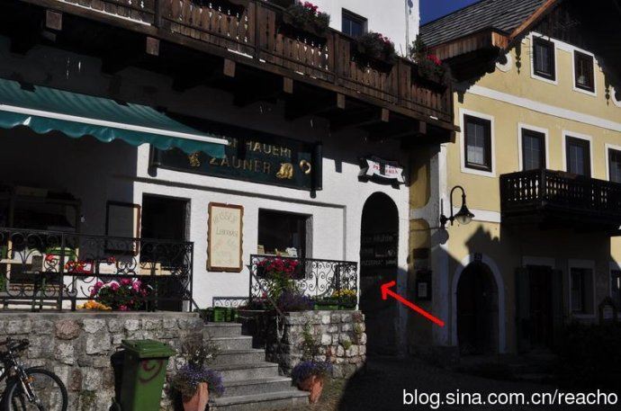

Please be prepare around 13:00 at the bus Terminal Lahn!(#18)
Daniel
www.shuttlebus.cz
+420 604 914 496

Maria Trausner
Lahn 27
4830 Hallstatt
Tel: +43 (0) 6134 / 8710
http://www.hallstatt.net/accommodation/bed-and-breakfast/family-trausner-steinboeck/
地址：Pizzeria und Jugendherberge Kirchenweg 36 4830 Hallstatt
价格：18欧/人， 房价由原本的23欧/人 到现场后任意涨价为25欧
电话：0043 61348318
http://blog.sina.com.cn/s/blog_6abd5e8101011f25.html
房间：旅馆有3层楼，晚上在这里住宿几乎没人，即使你住的是4人间，也等于是一个人住一间房，性价比朝值无比。房间外就是湖水和天鹅，仿佛世外桃源。
这个旅馆没有网站，老板下午4点以后上班，才能办理check in手续，中午12点之前退房
预定方法：打电话预定，无需押金之类，一般电话要下午4点以后才有人接。
老板开这个旅馆纯粹是为了打发日子，而不是赚钱，所以电话很难打通，大多数时候老板都不在。最好的方法是直接去，不用担心没有房间，下午4点以后可能会有服务员在。
这个旅馆在半山腰上，稍微有点难找。
是从这个门洞里进去，进去后就是一个小山坡，山坡边就是旅馆

Guesthouse Sarstein
Fam. Fischer
Gosaumühlstr. 83
4830 Hallstatt
Tel: +43 (0) 6134 / 8217
Fax: +43 (0) 6134 / 206 35
Hallberg 17
4830 Hallstatt
Tel: +43 (0) 6134 / 8508
Mobil: +43 (0) 664 73817625
Hildegard Cijan
Malerweg 171
4830 Hallstatt Tel: +43 (0) 6134 / 8528
Prices for 1-2 nights: Euro 24 per person, including breakfast and tax
Fam. Lichtenegger
Echerntalweg 214
4830 Hallstatt
Tel: +43 (0) 6134 / 8547
Fax: +43 (0) 6134 / 8547
Mobil: +43 (0) 664 / 335 03 87
1 or 2 nights 25,- Euro
Maria Trausner
Lahn 27
4830 Hallstatt
Tel: +43 (0) 6134 / 8710
Lidy & René Jansen
Kohlstattweg 186
4830 Hallstatt
Tel: +43 (0) 6134 / 20 631
实在不行就去infomation center叫人帮忙
http://www.hallstatt.net/accommodation/bed-and-breakfast/haus-cijan/
Latest news for hikers in the World Heritage region of Hallstatt / Dachstein Salzkammergut: Due to the tremendous damage caused by a landslide, the Soleweg is closed in its entirety from Hallstatt to Bad Goisern until further notice! As an alternative, here you can find an overview of the most beautiful routes around Lake Hallstatt.
要看到最经典的Hallstatt的风景呢，应该是往北走，面对着火车站位置的左手边，早上去如果有太阳，就能看到最美的风景啦。另外一边，也就是汽车进入小镇的路口叫Lahn的地方，那个地方看到的也不错，个人还是比较喜欢另一头，不过呢，这两个地方，来回一走，也就是15分钟的路程呢。
推荐程度：*****
看点：世界上最古老的盐坑，轨道推车，木滑梯
位置：沿Seestrasse步行至国道，看到一个盐矿工人雕塑后，向山上方向步行3分钟，很快就看到缆车站。
开放时间：4月29日－10月26日，9:00-16:30
推荐程度：****
看点：90分钟看Obersee和Untersee全景
上船地点：Hallstatt Lahn码头
价格：8欧
Please be prepare around 13:00 at the bus Terminal Lahn!(#18)
Daniel
www.shuttlebus.cz
+420 604 914 496